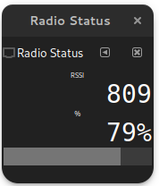
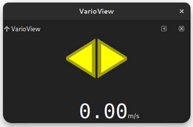
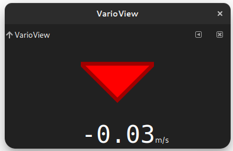
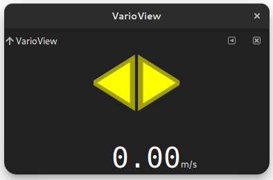
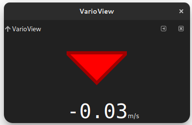
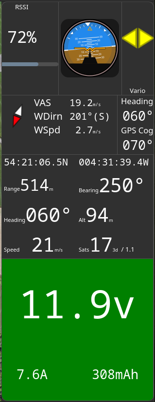

Side Bar Concepts and Usage#
Side Bar Overview#
The Side Bar, items 4 and 6 in the main window guide provides an area for optional widgets.

The main dock controls are shown below. Please note these images are from the legacy version of mwp.:
Side Bar Items (Dockets)#
The following items are provided.
Artificial Horizon#

Direction View#

Flight View#

RSSI / LQ Status#

Battery Monitor#

Vario View#
 



Side Bar Configuration#
A very simple, bespoke panel comprising embedded resizeable panes has been implemented. The configuration may be user defined by a simple text file ~/.config/mwp/panel.conf.
- The panel consists for four vertical panels
- The top panel can hold three horizontal panes
- The other panels can hold two horizontal panes.
Each entry is defined by a comma separated line defining the panel widget name, the row (0-3) and the column (0-2) and an optional minimum size (only required for the artificial horizon). The default panel is defined (in the absence of a configuration file) as:
# default widgets
ahi,0,1,100
rssi, 1, 0
dirn, 1, 1
flight, 2, 0
volts, 3, 0
Which appears as:

The available panel widgets are named as:
| Name | Usage |
|---|---|
ahi |
Artificial horizon |
dirn |
Direction comparison |
flight |
"Flight View" Position / Velocity / Satellites etc, |
volts |
Battery information |
vario |
Vario indicator |
No other legacy widgets have been migrated.
So using the following ~/.config/mwp/panel.conf
# default + vario widgets
ahi,0,1,100
vario,0,2
rssi, 1, 0
dirn, 1, 1
flight, 2, 0
volts, 3, 0
would appear as: 